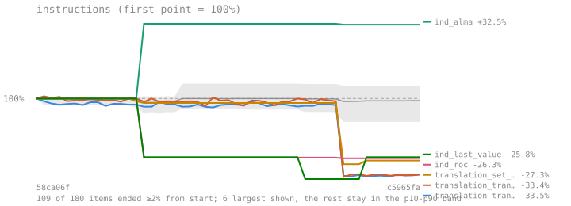

Performance summary#
Generated by
cargo soothfast report
| item | instructions | median | p99 | allocs | polls |
|---|---|---|---|---|---|
finance_query::bt_atr_sizing | 623506 | 47.21µs | 48.13µs | 164 | n/a |
finance_query::bt_base_to_htf_index | 321073 | 17.56µs | 18.74µs | 1 | n/a |
finance_query::bt_bayesian_search | 25980167 | 1.75ms | 1.77ms | 2382 | n/a |
finance_query::bt_fractional_kelly_sizing | 463515 | 31.16µs | 31.36µs | 88 | n/a |
finance_query::bt_grid_pareto | 12971377 | 514.34µs | 587.57µs | 2966 | n/a |
finance_query::bt_grid_search | 13011151 | 514.73µs | 597.30µs | 3012 | n/a |
finance_query::bt_leveraged_margin | 587852 | 39.68µs | 40.12µs | 158 | n/a |
finance_query::bt_monte_carlo | 1066509 | 134.19µs | 147.05µs | 6 | n/a |
finance_query::bt_resample | 1437804 | 73.16µs | 75.67µs | 11 | n/a |
finance_query::bt_sma_crossover | 9527581 | 696.59µs | 709.90µs | 2373 | n/a |
finance_query::bt_strategy_builder | 1050073 | 104.65µs | 115.70µs | 328 | n/a |
finance_query::capability_name | 26 | 1.3ns | 1.7ns | 0 | n/a |
finance_query::cond_bench_always_false | 250024 | 13.55µs | 13.78µs | 6 | n/a |
finance_query::cond_bench_always_true | 4051023 | 367.19µs | 372.22µs | 4045 | n/a |
finance_query::cond_bench_has_position | 4040040 | 362.23µs | 441.97µs | 4045 | n/a |
finance_query::cond_bench_held_for_bars | 1550135 | 122.40µs | 123.67µs | 1041 | n/a |
finance_query::cond_bench_in_loss | 4328088 | 363.63µs | 408.49µs | 4045 | n/a |
finance_query::cond_bench_in_profit | 546191 | 35.18µs | 35.42µs | 142 | n/a |
finance_query::cond_bench_is_long | 4281047 | 361.81µs | 365.19µs | 4045 | n/a |
finance_query::cond_bench_is_short | 397473 | 23.13µs | 23.37µs | 13 | n/a |
finance_query::cond_bench_no_position | 397471 | 23.12µs | 23.41µs | 13 | n/a |
finance_query::cond_bench_stop_loss | 450474 | 26.66µs | 26.99µs | 24 | n/a |
finance_query::cond_bench_take_profit | 439393 | 25.41µs | 25.59µs | 13 | n/a |
finance_query::cond_bench_trailing_stop | 583945 | 35.07µs | 35.50µs | 92 | n/a |
finance_query::cond_bench_trailing_take_profit | 584099 | 39.39µs | 39.78µs | 72 | n/a |
finance_query::de_chart | 106289 | 5.56µs | 5.72µs | 13 | n/a |
finance_query::de_crypto_coins | 333263 | 19.04µs | 19.38µs | 205 | n/a |
finance_query::de_currencies | 570830 | 42.11µs | 42.56µs | 647 | n/a |
finance_query::de_edgar_facts | 13462442 | 933.39µs | 957.55µs | 11899 | n/a |
finance_query::de_edgar_submissions | 5082103 | 373.60µs | 377.23µs | 6784 | n/a |
finance_query::de_fear_and_greed | 1394 | 60.1ns | 63.9ns | 0 | n/a |
finance_query::de_fear_and_greed_crypto_history | 15256 | 780.9ns | 819.2ns | 3 | n/a |
finance_query::de_financials | 222039 | 15.14µs | 23.16µs | 206 | n/a |
finance_query::de_fred_series | 1204753 | 69.84µs | 80.63µs | 873 | n/a |
finance_query::de_hours | 6538 | 389.5ns | 438.4ns | 10 | n/a |
finance_query::de_market_summary | 246101 | 18.12µs | 18.47µs | 228 | n/a |
finance_query::de_news | 36509 | 2.11µs | 2.15µs | 53 | n/a |
finance_query::de_options | 12324 | 679.4ns | 712.0ns | 6 | n/a |
finance_query::de_quote | 9198646 | 649.13µs | 670.78µs | 8235 | n/a |
finance_query::de_screener | 3851567 | 277.38µs | 284.14µs | 4498 | n/a |
finance_query::de_search | 51249 | 3.36µs | 3.41µs | 55 | n/a |
finance_query::de_treasury_yields | 763414 | 40.02µs | 43.54µs | 119 | n/a |
finance_query::de_trending | 14752 | 920.4ns | 934.4ns | 24 | n/a |
finance_query::dispatch_select | 71 | 2.6ns | 2.9ns | 0 | n/a |
finance_query::ind_accumulation_distribution | 27603 | 2.39µs | 2.41µs | 1 | n/a |
finance_query::ind_alma | 107543 | 4.11µs | 4.14µs | 2 | n/a |
finance_query::ind_aroon | 185005 | 8.42µs | 8.66µs | 9 | n/a |
finance_query::ind_atr | 56336 | 7.12µs | 7.23µs | 2 | n/a |
finance_query::ind_awesome_oscillator | 52217 | 4.82µs | 4.85µs | 4 | n/a |
finance_query::ind_balance_of_power | 27200 | 1.44µs | 1.45µs | 2 | n/a |
finance_query::ind_bull_bear_power | 29367 | 4.51µs | 4.54µs | 3 | n/a |
finance_query::ind_cci | 150043 | 10.90µs | 12.84µs | 2 | n/a |
finance_query::ind_chaikin_oscillator | 66624 | 9.85µs | 10.08µs | 4 | n/a |
finance_query::ind_choppiness_index | 272736 | 13.21µs | 14.13µs | 8 | n/a |
finance_query::ind_cmf | 49272 | 2.34µs | 2.35µs | 2 | n/a |
finance_query::ind_cmo | 61600 | 3.97µs | 4.09µs | 2 | n/a |
finance_query::ind_coppock_curve | 72521 | 4.83µs | 4.86µs | 3 | n/a |
finance_query::ind_dema | 40723 | 7.55µs | 7.59µs | 3 | n/a |
finance_query::ind_donchian_channels | 181300 | 8.27µs | 8.52µs | 9 | n/a |
finance_query::ind_elder_ray | 29368 | 4.51µs | 4.56µs | 3 | n/a |
finance_query::ind_fibonacci_pivot_points | 24494 | 2.37µs | 2.38µs | 1 | n/a |
finance_query::ind_fibonacci_retracement | 184691 | 9.08µs | 9.28µs | 9 | n/a |
finance_query::ind_heikin_ashi | 129126 | 9.12µs | 9.16µs | 9 | n/a |
finance_query::ind_hma | 99924 | 7.67µs | 7.72µs | 5 | n/a |
finance_query::ind_ichimoku | 532356 | 26.49µs | 27.53µs | 27 | n/a |
finance_query::ind_keltner_channels | 97155 | 12.32µs | 12.48µs | 5 | n/a |
finance_query::ind_last_value | 23 | 1.5ns | 1.8ns | 0 | n/a |
finance_query::ind_macd | 82093 | 13.25µs | 13.34µs | 7 | n/a |
finance_query::ind_mcginley_dynamic | 21645 | 10.85µs | 10.90µs | 1 | n/a |
finance_query::ind_mfi | 94016 | 4.61µs | 4.68µs | 3 | n/a |
finance_query::ind_momentum | 1183549 | 84.05µs | 90.21µs | 52 | n/a |
finance_query::ind_momentum_single | 7951 | 403.8ns | 410.0ns | 1 | n/a |
finance_query::ind_moving_averages | 477330 | 57.13µs | 57.46µs | 27 | n/a |
finance_query::ind_parabolic_sar | 25063 | 1.42µs | 1.43µs | 1 | n/a |
finance_query::ind_patterns | 1184420 | 68.70µs | 69.64µs | 1 | n/a |
finance_query::ind_pivot_points | 25989 | 2.65µs | 2.67µs | 1 | n/a |
finance_query::ind_roc | 16807 | 1.21µs | 1.21µs | 1 | n/a |
finance_query::ind_sma | 2200241 | 216.21µs | 221.58µs | 1 | n/a |
finance_query::ind_stochastic | 225478 | 11.81µs | 12.05µs | 11 | n/a |
finance_query::ind_stochastic_rsi | 287005 | 17.51µs | 17.64µs | 12 | n/a |
finance_query::ind_supertrend | 117648 | 10.81µs | 10.91µs | 4 | n/a |
finance_query::ind_tema | 57797 | 11.07µs | 11.20µs | 4 | n/a |
finance_query::ind_trend | 1029968 | 68.23µs | 72.85µs | 48 | n/a |
finance_query::ind_true_range | 17022 | 980.9ns | 1.16µs | 1 | n/a |
finance_query::ind_volatility | 664914 | 46.61µs | 48.10µs | 28 | n/a |
finance_query::ind_volume | 315416 | 26.69µs | 27.53µs | 14 | n/a |
finance_query::ind_vwap | 31602 | 2.40µs | 2.42µs | 1 | n/a |
finance_query::ind_vwma | 43549 | 2.34µs | 2.36µs | 1 | n/a |
finance_query::ind_williams_r | 180059 | 7.81µs | 8.07µs | 7 | n/a |
finance_query::ind_wma | 30722 | 2.66µs | 2.69µs | 7 | n/a |
finance_query::ind_zigzag | 18068 | 1.11µs | 1.16µs | 4 | n/a |
finance_query::ref_bench_accumulation_distribution | 569720 | 28.51µs | 28.74µs | 23 | n/a |
finance_query::ref_bench_adx | 5180062 | 409.74µs | 414.49µs | 4930 | n/a |
finance_query::ref_bench_alma | 5732273 | 438.24µs | 444.22µs | 5019 | n/a |
finance_query::ref_bench_aroon | 5580166 | 414.34µs | 421.49µs | 4950 | n/a |
finance_query::ref_bench_atr | 5452528 | 413.50µs | 418.38µs | 4996 | n/a |
finance_query::ref_bench_awesome_oscillator | 3220537 | 241.59µs | 256.42µs | 2636 | n/a |
finance_query::ref_bench_balance_of_power | 574845 | 28.36µs | 30.76µs | 25 | n/a |
finance_query::ref_bench_bear_power | 1490827 | 101.55µs | 102.48µs | 806 | n/a |
finance_query::ref_bench_bollinger | 5769356 | 437.86µs | 444.47µs | 4968 | n/a |
finance_query::ref_bench_bull_power | 5231091 | 382.58µs | 444.85µs | 4238 | n/a |
finance_query::ref_bench_candle_body | 254008 | 13.90µs | 14.09µs | 6 | n/a |
finance_query::ref_bench_candle_range | 4881521 | 399.86µs | 404.87µs | 5043 | n/a |
finance_query::ref_bench_cci | 3152731 | 236.20µs | 238.15µs | 2605 | n/a |
finance_query::ref_bench_chaikin_oscillator | 643148 | 37.76µs | 38.87µs | 26 | n/a |
finance_query::ref_bench_choppiness_index | 5730209 | 426.06µs | 443.99µs | 5002 | n/a |
finance_query::ref_bench_close | 4870270 | 401.63µs | 408.39µs | 5043 | n/a |
finance_query::ref_bench_cmf | 584984 | 28.80µs | 29.45µs | 25 | n/a |
finance_query::ref_bench_cmo | 3054666 | 228.87µs | 231.99µs | 2598 | n/a |
finance_query::ref_bench_coppock_curve | 3322925 | 237.13µs | 239.91µs | 2559 | n/a |
finance_query::ref_bench_dema | 5282224 | 406.67µs | 413.99µs | 4875 | n/a |
finance_query::ref_bench_donchian | 5963841 | 450.95µs | 458.38µs | 4976 | n/a |
finance_query::ref_bench_elder_bear_power | 1490290 | 101.00µs | 102.84µs | 806 | n/a |
finance_query::ref_bench_elder_bull_power | 5230071 | 381.51µs | 390.68µs | 4238 | n/a |
finance_query::ref_bench_ema | 5378131 | 408.45µs | 420.51µs | 4963 | n/a |
finance_query::ref_bench_gap_pct | 2658455 | 207.57µs | 209.94µs | 2489 | n/a |
finance_query::ref_bench_high | 4871294 | 402.24µs | 411.96µs | 5043 | n/a |
finance_query::ref_bench_hma | 5464272 | 411.84µs | 419.52µs | 4957 | n/a |
finance_query::ref_bench_htf | 6332589 | 481.78µs | 614.67µs | 7039 | n/a |
finance_query::ref_bench_htf_region | 6428901 | 478.81µs | 495.89µs | 7039 | n/a |
finance_query::ref_bench_ichimoku | 6198274 | 464.15µs | 477.86µs | 4836 | n/a |
finance_query::ref_bench_ichimoku_custom | 6198300 | 463.35µs | 476.14µs | 4836 | n/a |
finance_query::ref_bench_is_bearish | 255007 | 13.98µs | 14.16µs | 6 | n/a |
finance_query::ref_bench_is_bullish | 255007 | 13.90µs | 14.06µs | 6 | n/a |
finance_query::ref_bench_keltner | 5985473 | 453.52µs | 462.61µs | 4972 | n/a |
finance_query::ref_bench_low | 5083675 | 403.78µs | 407.34µs | 5043 | n/a |
finance_query::ref_bench_macd | 3225940 | 245.22µs | 247.62µs | 2541 | n/a |
finance_query::ref_bench_mcginley | 5422732 | 416.52µs | 423.76µs | 4963 | n/a |
finance_query::ref_bench_median_price | 4882519 | 401.29µs | 405.79µs | 5043 | n/a |
finance_query::ref_bench_mfi | 5503687 | 412.20µs | 419.81µs | 4998 | n/a |
finance_query::ref_bench_momentum | 2812427 | 223.74µs | 226.31µs | 2552 | n/a |
finance_query::ref_bench_obv | 627066 | 36.47µs | 62.98µs | 30 | n/a |
finance_query::ref_bench_open | 4871266 | 402.26µs | 410.66µs | 5043 | n/a |
finance_query::ref_bench_parabolic_sar | 5922938 | 441.58µs | 457.58µs | 5056 | n/a |
finance_query::ref_bench_price | 4870270 | 399.99µs | 404.81µs | 5043 | n/a |
finance_query::ref_bench_price_change_pct | 2888521 | 221.81µs | 223.81µs | 2489 | n/a |
finance_query::ref_bench_relative_volume | 5722583 | 430.35µs | 437.98µs | 4949 | n/a |
finance_query::ref_bench_roc | 3004633 | 224.51µs | 226.41µs | 2587 | n/a |
finance_query::ref_bench_rsi | 5136196 | 411.17µs | 419.95µs | 4994 | n/a |
finance_query::ref_bench_sma | 5382047 | 406.01µs | 416.25µs | 4963 | n/a |
finance_query::ref_bench_stochastic | 5886061 | 452.12µs | 458.74µs | 4987 | n/a |
finance_query::ref_bench_stochastic_rsi | 6031821 | 451.08µs | 481.07µs | 4831 | n/a |
finance_query::ref_bench_supertrend | 6069317 | 449.38µs | 453.82µs | 5021 | n/a |
finance_query::ref_bench_tema | 5029808 | 403.89µs | 413.63µs | 4781 | n/a |
finance_query::ref_bench_true_range | 5421979 | 412.75µs | 417.93µs | 5059 | n/a |
finance_query::ref_bench_typical_price | 5651920 | 428.43µs | 436.08µs | 5043 | n/a |
finance_query::ref_bench_volume | 4871266 | 401.08µs | 402.93µs | 5043 | n/a |
finance_query::ref_bench_vwap | 5381399 | 415.41µs | 424.50µs | 5060 | n/a |
finance_query::ref_bench_vwma | 5353321 | 408.58µs | 417.89µs | 4964 | n/a |
finance_query::ref_bench_williams_r | 743827 | 35.23µs | 37.12µs | 29 | n/a |
finance_query::ref_bench_wma | 5392315 | 406.64µs | 414.52µs | 4969 | n/a |
finance_query::risk_beta | 270426 | 35.07µs | 35.72µs | 0 | n/a |
finance_query::risk_calmar | 134 | 9.0ns | 9.6ns | 0 | n/a |
finance_query::risk_historical_cvar | 4313776 | 278.46µs | 283.10µs | 2 | n/a |
finance_query::risk_historical_var | 31047636 | 1.96ms | 2.01ms | 2 | n/a |
finance_query::risk_information_ratio | 145835 | 20.23µs | 20.57µs | 1 | n/a |
finance_query::risk_kelly_criterion | 30597 | 2.35µs | 2.43µs | 16 | n/a |
finance_query::risk_max_drawdown | 35063 | 5.15µs | 5.26µs | 1 | n/a |
finance_query::risk_omega_ratio | 143405 | 17.00µs | 17.30µs | 0 | n/a |
finance_query::risk_parametric_cvar | 100419 | 16.99µs | 17.25µs | 0 | n/a |
finance_query::risk_parametric_var | 100415 | 17.02µs | 17.27µs | 0 | n/a |
finance_query::risk_sharpe | 100409 | 16.99µs | 17.07µs | 0 | n/a |
finance_query::risk_sortino | 170039 | 17.04µs | 18.92µs | 0 | n/a |
finance_query::risk_tracking_error | 145832 | 20.24µs | 20.76µs | 1 | n/a |
finance_query::risk_ulcer_index | 619303 | 111.93µs | 113.28µs | 2 | n/a |
finance_query::risk_win_loss_stats | 389593 | 128.94µs | 134.97µs | 25 | n/a |
finance_query::rss_parse | 61327 | 4.16µs | 4.20µs | 48 | n/a |
finance_query::score_news | 859734 | 53.50µs | 55.81µs | 976 | n/a |
finance_query::score_transcript | 44577124 | 3.20ms | 3.39ms | 42100 | n/a |
finance_query::ser_currencies | 201829 | 10.87µs | 11.13µs | 8 | n/a |
finance_query::stream_deserialize | 14034 | 717.6ns | 821.3ns | 4 | n/a |
finance_query::stream_serialize | 11061 | 626.7ns | 667.3ns | 4 | n/a |
finance_query::ticker_chart_then_cached | 10838 | 1.23µs | 1.25µs | 20 | n/a |
finance_query::ticker_quote_polls | 222958 | 6.26µs | 6.30µs | 3 | 1 |
finance_query::ticker_quote_then_cached | 419959 | 9.37µs | 9.60µs | 4 | n/a |
finance_query::tickers_batch_quote_then_cached | 235375 | 7.47µs | 7.60µs | 16 | n/a |
finance_query::translate_dictionary | 15658 | 1.63µs | 1.70µs | 49 | n/a |
finance_query::translation_set_backend | 181 | 36.2ns | 38.1ns | 1 | n/a |
finance_query::translation_translate | 36053 | 2.69µs | 2.72µs | 79 | n/a |
finance_query::translation_translate_with | 35284 | 2.61µs | 2.63µs | 77 | n/a |



built with cargo soothfast docs build
source